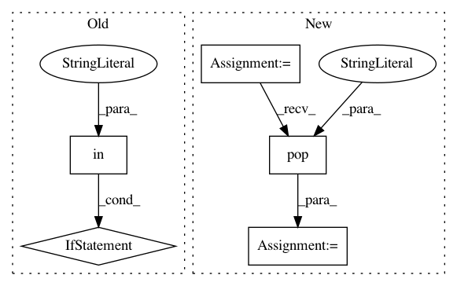

53f15232ed13154bc5338dc002b43c3c62547ea7,dataset/models/tf/vgg.py,VGG,block,#Any#Any#Any#Any#Any#Any#,139
Before Change
-------
tf.Tensor
layout = "cna" if "batch_norm" in kwargs else "ca"
layout = layout * (depth_3 + depth_1) + "p"
kernels = [3] * depth_3 + [1] * depth_1
with tf.variable_scope(name):
x = conv_block(dim, inputs, filters, kernels, layout, **kwargs)
After Change
-------
tf.Tensor
layout = kwargs.pop("layout", "cna")
layout = layout * (depth_3 + depth_1) + "p" * downscale
kernels = [3] * depth_3 + [1] * depth_1
with tf.variable_scope(name):
x = conv_block(inputs, filters, kernels, layout=layout, name="conv", **kwargs)
In pattern: SUPERPATTERN
Frequency: 4
Non-data size: 5
Instances
Project Name: analysiscenter/batchflow
Commit Name: 53f15232ed13154bc5338dc002b43c3c62547ea7
Time: 2017-11-12
Author: rhudor@gmail.com
File Name: dataset/models/tf/vgg.py
Class Name: VGG
Method Name: block
Project Name: pantsbuild/pants
Commit Name: a1696c815774552ee14e8df30f5636bb97c2b9e9
Time: 2018-07-13
Author: john.sirois@gmail.com
File Name: src/python/pants/backend/python/tasks/wrapped_pex.py
Class Name: WrappedPEX
Method Name: run
Project Name: eth-cscs/reframe
Commit Name: b817ad7232b542afd9fe258a85f7a059322dd8a1
Time: 2020-11-25
Author: karakasis@cscs.ch
File Name: reframe/utility/jsonext.py
Class Name: _ReframeJsonDecoder
Method Name: __init__
Project Name: ray-project/ray
Commit Name: dc42abb2f5f7dd059cf6fac3eae2832931925573
Time: 2021-01-18
Author: krfricke@users.noreply.github.com
File Name: python/ray/tune/config_parser.py
Class Name:
Method Name: create_trial_from_spec